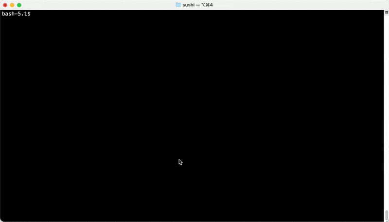

FSH Seminar
0.1.0
- ci-build
FSH Seminar
0.1.0
- ci-build
Publish Box goes here
The goal of this part of the course is to describe the thought process and mechanics of starting a new IG and creating an initial set of constraints. We'll start with why you might want to create an IG, then talk about what is in a FHIR IG, and finally show how to create one.
A FHIR IG is fundamentally an agreement among implementers on an approach to solve a specific problem. The effectiveness of this agreement depends on multiple factors including:
These factors can be codified into the workflow below1 (but note that while this workflow is effective for many FHIR IGs – especially Domain of Knowledge and Community of Implementation IGs – it may not be appropriate for all IGs):
The section of upstream work in the diagram is critical to the success of subsequent steps, and the output of this work should be reflected both in the downstream decisions codified in the IG's artifacts and in the narrative of the IG.
The implementation guide portion2 is generated by the process of taking the outputs from the upstream work and converting them to FHIR artifacts. This requires making a number of profiling decisions, which is the core work of an IG author.
Once the IG is created, additional downstream work, such as the creation of a reference implementation or test data may be support adoption by implementers.
Creating a new IG is an involved process that may take multiple years to complete. This is in part due to the complexity of the ecosystem FHIR inhabits, and the number of different stakeholders often need to be aligned for an IG to be successful.
An IG is a set of FHIR artifacts and accompanying narrative that constrains and extends the base FHIR specification to meet the needs of specified use cases.
Constraints reduce the flexibility of the base FHIR resources to better meet the needs of the IG's use case(s). For example, the base Patient resource does not require Patient.name to be filled in, but many use cases require a patient's name. An IG for one of these use cases might therefore include a profile of Patient that constrains the cardinality of Patient.name to be 1..* (rather than the default of 0..*) to ensure at least one value for name is included. Other common types of constraints include terminology binding, slicing, and invariants.
The base FHIR specification by design does not include all the functionality needed for all use cases. However, it does include mechanisms to extend functionality in a consistent, computable fashion. Extensions provide a way to add data elements to profiles, and resources like OperationDefintion and SearchParameter provide a mechanism for defining use case-specific APIs.
IGs therefore contain the FHIR artifacts that extend or constrain FHIR, and the accompanying narrative. In the next section we'll describe the mechanics getting FHIR artifacts, narrative, and other content into an IG.
Both the human-readable and computable versions of IGs are generated by software called the FHIR IG Publisher. This is a Java application usually named publisher.jar and available for download from https://github.com/HL7/fhir-ig-publisher/releases.
The IG publisher takes a set of inputs and converts them into the content for a website constituting a "build" of the IG. The website includes packaged downloads of the computable portions of the IG at https://example.com/your-ig/package.tgz.
The typical workflow for working on an IG is:
publisher.jar to create a local build of the IG you can reviewThis very website is built using the FHIR IG workflow and tools, including publisher.jar.
Under the hood, computable rules in FHIR are defined by a set of conformance-specific FHIR resources. The FHIR spec not only defines resources for representing health data (like the Patient resource from Part 1), but also defines resources for many other uses including conformance.
StructureDefinition is one of FHIR's conformance resources, which is how FHIR profiles are defined. Here's an example of a StructureDefinition from the mCODE IG:
{
"resourceType": "StructureDefinition",
"id": "mcode-cancer-patient",
"url": "http://hl7.org/fhir/us/mcode/StructureDefinition/mcode-cancer-patient",
"version": "1.17.1",
"name": "CancerPatient",
"title": "Cancer Patient",
"status": "active",
"description": "A patient who has...",
"fhirVersion": "4.0.1",
"kind": "resource",
"abstract": false,
"type": "Patient",
"baseDefinition": "http://hl7.org/fhir/us/core/StructureDefinition/us-core-patient",
"derivation": "constraint",
"differential": {
"element": [
{
"id": "Patient",
"path": "Patient",
"mustSupport": true
},
{
"id": "Patient.deceased[x]",
"path": "Patient.deceased[x]",
"mustSupport": true
}
]
}
}
While you can create StructureDefinition resources manually in JSON (or XML), it is often much easier to use FHIR Shorthand (FSH), which is a domain-specific language for creating FHIR resources.
Here's the same StructureDefinition resource from above, but this time written in FSH:
Profile: CancerPatient
Parent: USCorePatient
Id: mcode-cancer-patient
Title: "Cancer Patient"
Description: "A patient who has..."
* deceased[x] MS
* . MS
An application called SUSHI takes care of compiling FSH into FHIR resources represented in JSON. This is baked into the IG publisher workflow – the workflow diagramed above really looks more like this:
Typically IG narrative is written in a lightweight markup language called Markdown. The IG Publisher takes care of converting this into HTML files viewable in a web browser.
By default, SUSHI generates a placeholder input/pagecontent/index.md file that is the home page for the IG. Additional .md files in this folder can be created to add additional pages; you will also need to add them to the pages object in sushi-config.yaml.
The prerequisites for this course include installing Visual Studio Code (VSCode) and the FSH language extension. While you can use any text editor to edit FSH (.fsh) files, currently only VSCode has syntax highlighting and other language-specific features via the custom language extension.
VSCode also supports editing Markdown out of the box (Markdown is used very widely outside of the FHIR/HL7 world), and if you follow that link you will see some additional Markdown extensions that are available if you want additional functionality (like "linting", which will warn you of syntax errors as you type). One of the most useful VSCode features is built-in Markdown previewing.
IGs also often include diagrams. There is native support in the IG Publisher for PlantUML, which is used to make the diagrams on this page. However, PlantUML has a much steeper learning curve than other diagramming tools (this is a good PlantUML resource if you are interested). You may find it easier to embed images exported from other tools like Microsoft Visio or diagrams.net, which can be done by placing them within the input/images/ folder and then using Markdown syntax for images. For example, input/images/something.png could be embedded in a Markdown page with . (Note that the path is different between the input location and the Markdown syntax – this is because publisher.jar moves the images as part of the build process. This means a Markdown preview of a pagecontent/ file in a FHIR IG won't properly display images.)
The simplest way to create a new IG is to run sushi init at the command line. Here's what this process looks like on Mac/Linux:

After you run this command, you will have a new folder with a structure of subfolders that forms the skeleton of an IG:
📂 SomeIgNameHere
├─ .gitignore
├─ _genonce.bat
├─ _genonce.sh
├─ _updatePublisher.bat
├─ _updatePublisher.sh
├─ ig.ini
├─📂 input
│ ├─📂 fsh
│ │ └─ patient.fsh
│ ├─ ignoreWarnings.txt
│ └─📂 pagecontent
│ └─ index.md
└─ sushi-config.yaml
We will explain the purpose of these folders and files below.
While this folder does have a .gitignore file, it is not a git repository. You will generally want to enable git:
git init
git add -A
git commit -m "Initial commit"
You can see the contents of the IG at this point here.
We will be "forking" this repository to use as an example in the rest of this part of the course, and to use as the basis for the exercise in Part 3.
We will use a hypothetical scenario as the basis for an instructional IG, which we will walk through creating in this section.
We will use the process from the workflow diagram at the top of this page, reproduced here for convenience:
Hypothetical problem:
The Obstructive Sleep Apnea Association (OSAA - a fictitious clinical organization based in the U.S.) is looking to evaluate the impact of obesity as a risk > for Obstructive Sleep Apnea (OSA). OSAA needs a way to ensure the relevant clinical data are collected in a standard, interoperable format from participating member sites.
Participants:
For the purposes of this course, we will assume the content of this IG is limited to Domain of Knowledge (i.e., the API for data exchange is out of scope).
The use case for this work is as follows:
OSAA has setup a small registry to collect EHR clinical data from healthcare organizations participating in this evaluation.
OSAA sites will submit the following required data to the central OSAA registry:
- Patient name, age, birth place
- Patient's managing practitioner name, and the practitioner(s) NPI identifier(s)
- A diagnosis of OSA, identified by one of the following ICD-10-CM codes:
G47.33Obstructive sleep apnea (adult) (pediatric)G47.30Sleep apnea, unspecified- Patient's body mass index (BMI)
- BMI calculated value
- Date when calculated
- The provider who performed the BMI calculation
Additionally, all participating sites may optionally submit:
- Date of OSA diagnosis
- Patient age at time of OSA diagnosis
Typically a use case like this would be developed with the involvement of stakeholders and subject matter experts. In this case, OSAA and providers from study sites would likely be involved alongside the technical experts authoring the specification.
Out of scope because this is a Domain of Knowledge IG.
Based on the use case, the essential data elements are:
Domain expertise may be required to identify the relevant terminology. The Terminology stream on chat.fhir.org may be a good resource to identify experts who can point you to the best code systems for your use case.
In this case, ICD-10-CM was identified in the use case as the code system to use for identifying diagnoses.
A good way to map a set of data elements onto FHIR resources is to identify any relationships among the identified data elements. We accomplish this by creating a high level concept or logical information model.
According to David Hay:
an "Information Model" describes the actual data items that are intended to be included when sharing clinical data. It is intended to allow a clinician (or a Business Analyst) to document these requirements without thinking about how it will be represented in ‘real’ FHIR resources. Very little FHIR knowledge is required.
Here is an information model for our use case:
High-level information models like this (i.e., not FHIR-specific) are helpful for a number of reasons:
We will need to pick a version of FHIR to base the IG off of. As of May 2022 FHIR 4.0.1 is the stable release, which is usually the correct choice. However, you can see all release here, and if an upcoming release is close to being ready you may want to use that instead. Currently both R4B and R5 are in progress.
IG authors should take care to align with existing specifications in the relevant jurisdiction. In our case, we will align with FHIR U.S. Core 3.2 profiles where possible.3
The IG creation stream on chat.fhir.org is a good place to ask for advice on alignment with existing specifications for a given use case.
We will now create a Resources Model, which David Hay defines as follows:
A "Resources Model" takes the Information Model and "divides it up" into the actual FHIR resources (including extensions) that will be required to represent the data in the Information Model. This needs a good understanding of FHIR, but the resultant model should be understandable by the clinician. Most of the time a Resources Model will represent multiple resources – though it is possible to create one for a single resource only.
Determining which FHIR resources are the best fit for mapping with the information model may be quite challenging due to the number of FHIR resources and conventions about which resources to use when. Some good places to start when trying to figure this out:
A structural mapping of our information elements to FHIR resource elements is shown in the table below. In this table, each row represents a data element, which are grouped into profiles of FHIR resources based on the "Profile Name" column. You can see which FHIR resource is being used for a given data element by looking at the first part of the "FHIR element name / Path" column (i.e., the patient's name is represented by Patient.name, indicating that the Patient resource is used).
| Profile Name | FHIR element name / Path | Use Case Data Element | Comments |
|---|---|---|---|
OSAPatient |
Patient.name |
Patient name | |
OSAPatient |
Patient.birthDate |
Patient birth date | |
OSAPatient |
Patient.generalPractitioner |
Patient's primary care provider | |
OSAPatient |
Patient.extension.patient-birthPlace |
Patient's birth place | Found FHIR standard extension, patient-birthPlace |
OSAPractitioner |
Defined in Part 3 | Practitioner name | |
OSAPractitioner |
Defined in Part 3 | Practitioner NPI | |
OSACondition |
Defined in Part 3 | OSA diagnosis code | |
OSACondition |
Defined in Part 3 | OSA onset date | |
OSACondition |
Defined in Part 3 | Managing provider who diagnosed OSA | |
OSABodyMassIndex |
Observation.code |
Body Mass Index (BMI) | Base on existing US Core BMI profile |
OSABodyMassIndex |
Observation.effectiveDateTime |
Body Mass Index (BMI) | |
OSABodyMassIndex |
Observation.valueQuantity |
BMI measurement |
When creating structural mappings to FHIR data elements, consider the following:
At this point you should have already identified target terminology, and now need to connect this to the relevant data elements from your Resources Model.
The two most common terminology-related conformance resources are:
You should avoid creating a new CodeSystem if possible. Instead, use one of the existing HL7 or external code systems defined here. More information on code systems may also be found at the HL7 Health Terminology Authority (HTA) Confluence site. Creating a new CodeSystem will likely increase implementer burden and harms interoperability across Implementation Guides.
CodeSystems in FHIR are identified by a canonical URL or OID. You will need to identify this to reference an existing CodeSystem in a ValueSet.
The ValueSet (not the CodeSystem) is bound to a FHIR element. When considering ValueSet bindings, keep the following in mind:
Now that we have identified the structural and semantic mappings from our information model onto FHIR resources, we can implement using FSH.
As you saw above, SUSHI will generate a folder structure for your IG when you run sushi init.
We will focus on the input/fsh/ and input/pagecontent/ folders, where your FSH and narrative Markdown respectively go.
Note For more information on the FSH syntax, see the official FHIR Shorthand language reference, and the links to sections of this specification in the narrative below. Details of using FSH will also be covered in Part 4 of this course.
All FSH files have a .fsh extension and are saved in input/fsh/. There is no standardized convention for organizing your input/fsh/ folder. You could have a single everything.fsh file that defined all your conformance resources, but in practice this can be hard to navigate.
If you have a simple IG, it's reasonable to have a single .fsh file for each separate FHIR resource that you create. You can also group related resources together in the same .fsh file, but again be wary of allowing these files to become too long. (Note that SUSHI reads all .fsh files at once, so there's no technical reason to group related resources in the same file.)
The mCODE IG approaches this problem in a fairly structured way, using 2-3 letter prefixes for its .fsh files to group them by resource type (e.g., SD for StructureDefinition, indicating a FSH file that defines profiles) and subject (whatever comes after the prefix). You can see this in action here. This is a reasonable approach assuming you don't find the prefixes too cryptic:
SD_<domain>.fsh (SD = StructureDefintion)VS_<domain>.fshAL_<domain>.fshEX_<domain>.fshDEF_<descriptor>.fshWe will take a simpler approach in the example IG for this seminar:
📂 fsh-seminar-exercise
├─ .gitignore
├─ _genonce.bat
├─ _genonce.sh
├─ _updatePublisher.bat
├─ _updatePublisher.sh
├─ ig.ini
├─📂 input
│ ├─📂 fsh
| │ └─ aliases.fsh # All aliases from long URLs to short keywords
| | └─ examples.fsh # Example FHIR resource instances
│ │ └─ profile_patient.fsh # Profile for patient identity + demographics
│ │ └─ profile_practitioner.fsh # Profile for the health care provider
│ │ └─ profile_clinical.fsh # Profiles for the clinical portion of the use case
│ │ └─ value_set_osa.fsh # ValueSet for Obstructive Sleep Apnea
│ ├─ ignoreWarnings.txt
│ └─📂 pagecontent
│ └─ index.md
└─ sushi-config.yaml
Recall that the FHIR IG Publisher and FHIR Shorthand compiler (SUSHI) define the folder structure above, and that SUSHI will actually generate this for you when you initialize a new project with sushi -- init.
For the purposes of this course, you can either run sushi init yourself to get this folder structure and add in the IG content by following the directions below, or get a pre-created copy of the folder structure and files above that includes everything discussed in Part 2 from GitHub. This will also form the basis of the exercise in Part 3.
We will now go through the content needed to construct the IG for our example use case.
We know that the IG needs to use FHIR 4.0.1, and depends on US Core 3.2. This configuration is done in sushi-config.yaml:
...
fhirVersion: 4.0.1 # Should already be set by SUSHI -- just check to make sure it's the correct version
dependencies:
hl7.fhir.us.core: 3.2.0
...
The rest of this file should be auto-generated by SUSHI and won't need modification, other than to add in additional narrative pages and navigation bar items.
Now is a good time to try building the IG. To do this, go to the IG's folder in your command prompt and run _genonce (./_genonce.sh for Mac/Linux, _genonce for Windows). If the IG builds successfully, you should be able to open output/index.html in your web browser see the boilerplate IG home page.
Aliases are a FSH convenience feature to avoid having to repeatedly type long URLs.
We know we'll need to use ICD-11-CM and some US Core profiles, so let's define aliases for those in input/fsh/aliases.fsh:
// Code systems
Alias: $ICD10CM = http://hl7.org/fhir/sid/icd-10-cm
Alias: $IdType = http://terminology.hl7.org/CodeSystem/v2-0203
Alias: $ObsStatus = http://hl7.org/fhir/observation-status
// US Core
Alias: $USCorePatient = http://hl7.org/fhir/us/core/StructureDefinition/us-core-patient
Alias: $USCoreBodyMassIndex = http://hl7.org/fhir/us/core/StructureDefinition/us-core-bmi
This will allow us to refer to ICD codes with ICD10CM#G47.33 when creating our ValueSet, and to US Core profiles with their aliases rather than their much longer canonical URIs.
In input/fsh/value_set_osa.fsh, define a ValueSet for the ICD codes listed in the use case:
ValueSet: ObstructiveSleepApneaVS
Id: osa-vs
Title: "Obstructive Sleep Apnea Conditions"
Description: "Obstructive Sleep Apnea Conditions"
* $ICD10CM#G47.33 "Obstructive sleep apnea (adult) (pediatric)"
* $ICD10CM#G47.30 "Sleep apnea, unspecified"
When you create a new IG with sushi init, it will generate input/fsh/patient.fsh as a placeholder. This placeholder file looks like:
// This is a simple example of a FSH file.
// This file can be renamed, and additional FSH files can be added.
// SUSHI will look for definitions in any file using the .fsh ending.
Profile: MyPatient
Parent: Patient
Description: "An example profile of the Patient resource."
* name 1..* MS
//...
This is essentially the minimal amount of FSH code that can be used to generate a profile. You can use FSH Online to see how this is transformed into a StructureDefinition represented in JSON.
ℹ️ Note that when creating a profile, you only need to specify "differentials": any element that is already specified in the parent does not need to be re-specified in your profile.
Here's what the human-readable version of the MyPatient profile looks like from an IG:
In the example above, a two constraints are added to the name element: 1..* cardinality ("one or more") and a MustSupport (MS; will be discussed below).
We will discard this example and create our own profile in input/fsh/profile_patient.fsh, define a profile based on US Core's Patient profile:
Profile: OSAPatient
Parent: $USCorePatient
Description: "An example Patient profile"
* birthDate 1..1
* extension contains http://hl7.org/fhir/StructureDefinition/patient-birthPlace named birthPlace 0..1 MS
* generalPractitioner only Reference(OSAPractitioner)
This FSH does the following:
* birthDate 1..1 makes this element required (it inherits a MustSupport flag from USCorePatient).patient-birthPlace extension is added as optional (0..1 cardinality) and MustSupport. We are using an extension because birth place is not supported by a standard element in the base Patient resource. The birthPlace extension is actually part of FHIR R4, so it's better from an interoperability perspective to use this extension vs. defining our own custom extension.generalPractitioner reference is restricted to only reference Practitioner instances that conform to the OSAPractitioner profile (to be defined below). This makes it clear to implementers how the OSAPatient and OSAPractitioner profiles are related.Name, age (i.e., birthDate), and birth place are all required based on the use case. It's reasonable to assume that name and age are known, so these elements are marked as required (minimum cardinality 1; note that name inherits this from USCorePatient).
We do not set the patient-birthPlace extension to be required (minimum cardinality 1) because it's possible these data will be missing, and we don't want to make it impossible to produce a conforming instance of Patient if the birth place isn't available. However, this should be populated if available so we mark it as MustSupport.
The required elements (name, birthDate) are also marked as MustSupport. This is redundant for the system producing the FHIR resource instances as the cardinality constraint ensures they are populated even without the MustSupport flag. However, for the receiving system, the MustSupport flag still has meaning – it typically would indicate that the receiving system would need to "meaningfully process" the MustSupport elements; without the MustSupport flag, the receiving system could discard these elements. The narrative of the IG should provide a definition of MustSupport to clarify its meaning to all participants (in our case OSAA as the receiver of FHIR resource instances, and the participating study sites as the producers of these instances).
At this point it's a good idea to run _genonce again to see the changes you've made to the IG. If you see an error related to OSAPractitioner, that is because you haven't defined this profile yet (see below) but you have referenced it. You can comment out the relevant line (// * generalPractitioner only Reference(OSAPractitioner) in OSAPatient to temporarily avoid this error.
If you do have OSAPractitioner defined so _genonce can run to completion, you should see something like this for the differential of OSAPatient:
If you made a mistake with your FSH syntax, you will see an error from SUSHI at the beginning of the _genonce process. It may be easier to debug this error by running SUSHI directly with sushi. The SUSHI command also runs a lot faster than the entire _genonce command, so you may find it useful to run sushi while writing FSH to check for syntax errors or other warnings.
This is part of the Part 3 exercise, so the solution is hidden (show solution).
In input/fsh/profile_practitioner.fsh, define a profile based on US Core's Practitioner profile:
Profile: OSAPractitioner
Parent: $USCorePractitioner
Description: "An example Practitioner profile"
* identifier[NPI] 1..1
From the use case, practitioner name and NPI are required. The US Core profile we are basing ours off of already has Practitioner.name as 1..1 MS, so we don't need to add any constraints here for name. Practitioner.identifier[NPI] is 0..1 MS in the parent profile as well, so we will further constrain to 1..1 here.
Note that you will need to add the $USCorePractitioner alias to aliases.fsh.
This is part of the Part 3 exercise, so the solution is hidden (show solution).
In input/fsh/profile_clinical.fsh, define a profile based on US Core's Condition profile:
Profile: OSACondition
Parent: $USCoreCondition
Description: "Obstructive sleep apnea (OSA) is a condition in which breathing stops involuntarily for brief periods of time during sleep. [Source: Healthline](https://www.healthline.com/health/sleep/obstructive-sleep-apnea)"
* code from ObstructiveSleepApneaVS (required)
* asserter only Reference(OSAPractitioner)
* onset[x] MS
* onset[x] ^short = "Best guess at onset of condition (not diagnosis time)"
* extension contains AgeAtOSADiagnosis named ageAtOsaDx 0..1 MS
Extension: AgeAtOSADiagnosis
Id: age-at-osa-diagnosis
Title: "Age at the time of diagnosis"
Description: "The date (and time) when the OSA diagnosis was made. Note that this could be calculated from the diagnosis date and time and birth date."
* value[x] only Age
You should now be familiar with most of the contents of this profile, with a few exceptions:
Description declaration includes Markdown syntax, which will be converted to HTML by the IG publisher pipeline.onset[x] ^short rule provides a short narrative description of the element. This will be covered more in Part 4.Note that you will need to add the $USCoreCondition alias to aliases.fsh.
In input/fsh/profile_clinical.fsh, define a profile based on US Core's BMI profile:
Profile: OSABodyMassIndex
Parent: $USCoreBodyMassIndex
Description: "Body mass index, or BMI, is a measure of body size. It combines a person's weight with their height."
* performer 1..1 MS
// BMI is a point in time measurement so exclude measurement by time period.
* effective[x] only dateTime
When creating examples, note that if you are basing your profile on another profile rather than the base FHIR resource, there could be additional required elements and constraints that are inherited from those parent profiles. For example, the US Core Condition Profile requires Condition.category.
Examples also go in input/fsh/ just like profile definitions. You can actually put them in the same file as a profile definition, which can get messy for a large IG but is fine for this example.
Create a new file called input/fsh/examples.fsh and append the following FSH:
Instance: osa-patient-jane-doe
InstanceOf: OSAPatient
Description: "Example OSA Patient."
* name.family = "Doe"
* name.given[0] = "Jane"
* identifier.use = #usual
* identifier.type = $IdType#MR "Medical Record Number"
* identifier.system = "http://hospital.example.org"
* identifier.value = "1234"
* gender = #female
* birthDate = "1950-01-22"
* extension[birthPlace].valueAddress.state = "MA"
Run _genonce again and you should then see an "Examples" tab appearing on the page for your OSAPatient profile. You should also be able to open output/Patient-osa-patient-jane-doe.html by following the links in the built IG.
The human-readable "Narrative Content" view of examples in the IG publisher is often missing a lot of data. Use the JSON view as an alternative to see all the data:
Follow the same pattern to create an example for BMI and Condition:
Instance: osa-bmi-example
InstanceOf: OSABodyMassIndex
Description: "Example of OSA BMI value"
* subject = Reference(osa-patient-jane-doe)
* status = $ObsStatus#final
* effectiveDateTime = "2021-09-28"
* performer = Reference(osa-practitioner-kyle-anydoc)
* valueQuantity = 32.5 'kg/m2' "kg/m2"
Note the reference to osa-practitioner-kyle-anydoc. You will need to create this example as well for the IG to build without errors. This is part of the Part 3 exercise, so the solution is hidden (show solution).
Instance: osa-practitioner-kyle-anydoc
InstanceOf: OSAPractitioner
Description: "Example of OSA Practitioner"
* identifier[NPI].value = "9988776655"
* name.family = "Anydoc"
* name.given = "Kyle"
* name.prefix = "Dr."
* gender = #male
* address.use = #home
* address.line = "567 Healthcare Drive"
* address.city = "Anytown"
* address.state = "MA"
* address.postalCode = "12345"
* address.country = "US"
* qualification.code = http://terminology.hl7.org/CodeSystem/v2-0360|2.7#MD "Doctor of Medicine"
Once your IG builds, it is a good idea to check output/qa.html to try to resolve any content errors or warnings with the IG. While SUSHI can preempt a subset of the possible content errors/warnings, it doesn't catch all of them due to the complexity of the IG building process.
If there are spurious warnings, you can add the content of output/qa.txt (the plain text version of the HTML page) to input/ignoreWarnings.txt along with a comment explaining why the warning was ignored.
If you recall the workflow diagram from above…
…you will notice that it culminates with "Downstream work", which may include developing test scenarios and reference data for the IG's use cases, and creating reference implementations. This is beyond the scope of this seminar, but this is still an important part of the IG development process.
In Part 3, you will complete the remaining profiling work in the example IG developed above.
Thanks to Dr. Mark Kramer for providing this figure. ↩
The "implementation guide" section of this diagram is somewhat simplified for the sake of clarity: for example, workflows are represented by SearchParameter resources in addition to "FHIR Operations" (OperationDefinition resources). Likewise, in addition to "FHIR Value Sets" (ValueSet resources), there are other terminology-related resources like CodeSystem and ConceptMap. ↩
Note that US Core 4.0.0 has subsequently been released. ↩